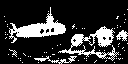
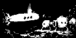
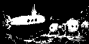
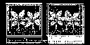
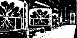
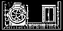
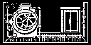
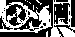
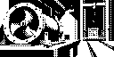

Pixelgen first-beat animation loops
Three consistent loops, one per first-beat image card. Each uses one anchor still and a motion mask; only the masked region changes. The retry anchors strengthen the submarine silhouette and use dithered texture closer to the existing decks. Four native frames at 300 ms gives a 1.2 s loop at 3.3 fps.
1 · The sub arrives





White permits change; black preserves frame 0. The silhouette mask bounds the submarine’s bob without touching the seabed, coral or open water.
Bundle provenance
- manifest · report · spec · contact sheet · GIF preview
- anchor: first-beat-arrival/final.png · manifest · report


2 · The grow tanks



The two mask rectangles cover the planted tank interiors. The frames and pipework outside them come from the anchor unchanged.
Bundle provenance
- manifest · report · spec · contact sheet · GIF preview
- anchor: first-beat-grow-tanks/final.png · manifest · report


3 · Benthos asks for repairs




The mask keeps the pump housing, floor and lift opening frozen while the dark impeller spokes turn inside a circular window.
Bundle provenance
- manifest · report · spec · contact sheet · GIF preview
- anchor: first-beat-repair-bay/final.png · manifest · report


Bundle notes
Native frames in each bundle are authoritative. The GIF is a preview only. Each loop was assembled from supplied frames with a rectangle motion mask, then checked and replayed; reports remain unreviewed.